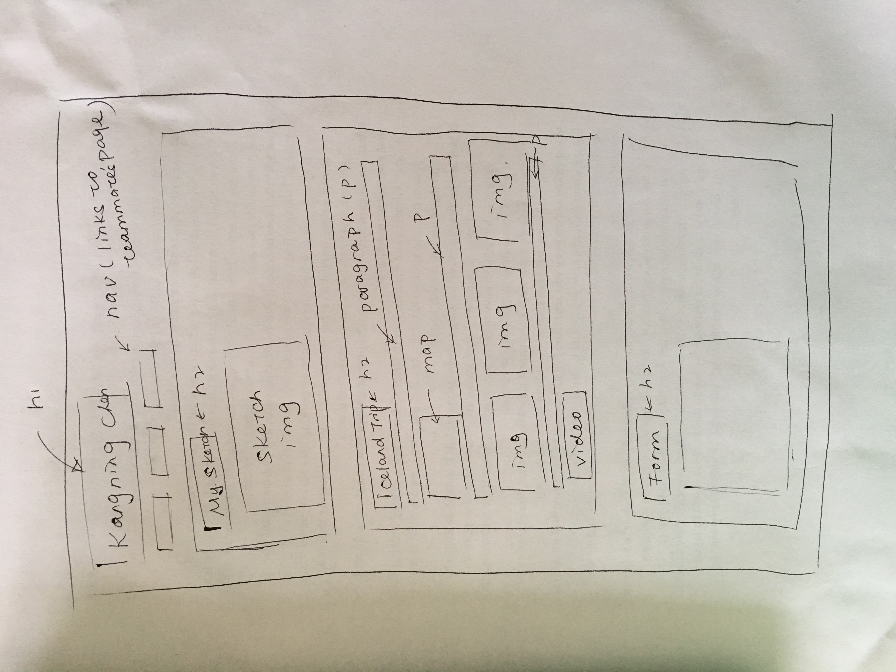

My Sketch
Below is a sketch on how I'd like my page to look like:
Iceland Trip
Where I stayed
Answers to questions 2, 3, and 6: (2) The video control bars in Safari, Chrome and Firefox all look different from each other. Moreover, while in Safari the DOB field is a blank field just like the name field, Chrome's and Firefox's DOB fields have mm/dd/yyyy showing in the fields and when clicked a calendar would pop up, from which user can select a date that would then populate the field. (3) No, it doesn't. Focus indicator is important because it's incredibly difficult for people who use a keyboard to navigate web pages to know which element is being focused on if the focus indicator is removed.
Some Pictures and a Video
My first stop was the Blue Lagoon. Here's a picture from the Internet.

We went on a road trip around the island. Here're two pictures from our road trip along Iceland's famous Ring Road.


Lastly...here's a video I took of the Great Geysir.